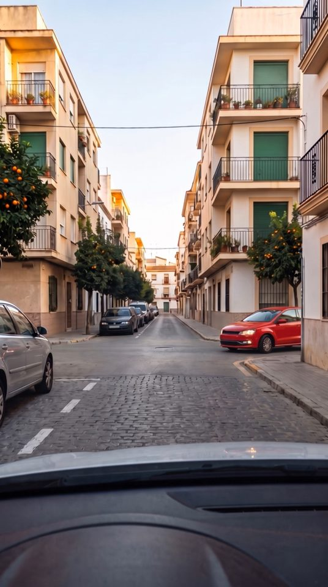

Unos 2 minutos. Activa el sonido: la escena se para cuando tienes que decidir.
Demo de DGTest. Escenas, mentora y alumno son ficticios; el vídeo está generado con IA y revisado contra el Reglamento General de Circulación.
Vídeos generados con IA y revisados con el Reglamento General de Circulación.
Mejor poco cada día que mucho un solo día: así se queda. Lo cambias cuando quieras.
Con su código, DGTest te sale gratis y tu profesor ve qué normas dominas y cuáles no.
Sin autoescuela: 7 días gratis y después 4,99 € al mes. Lo cancelas cuando quieras en los Ajustes del iPhone.
Tres respuestas por pregunta y solo una correcta. Nuestro simulacro es igual. Las preguntas salen de un banco propio, cada una con su explicación y su artículo.
Verde desde 80 %, ámbar entre 65 y 79 %, rojo por debajo de 65 %.
Tu profesor ve tu preparación por temas y te propone a examen cuando llegues al 80 %.
Permiso B. Próximamente: AM y A2.
Demo de DGTest. Alumno, autoescuela y datos son ficticios; los vídeos están generados con IA y revisados contra el Reglamento General de Circulación.
Pregúntame lo que quieras del teórico, o deja que te pregunte yo.
Grupo de teórico B, otoño 2026. Datos de ejemplo a 9 de octubre de 2026.
| Alumno | Examen | Preparación | Temas en rojo | Semáforo |
|---|
Semáforo: listo desde 80 %, casi entre 65 y 79 %, reforzar por debajo de 65 %. Un tema está en rojo por debajo de 65 %.
Lo meten al abrir la app y quedan en tu grupo: gratis para ellos, y ves su progreso desde aquí.
Toca una para ver la respuesta correcta. Úsalas en clase.
Plan Autoescuela: 1 € al mes por alumno activo. Tus alumnos tienen DGTest Plus gratis y tú este panel. Sin permanencia.
Alumnos y autoescuela ficticios. La preparación se calcula con las respuestas de cada alumno; en la versión real se calibra con los resultados de examen.